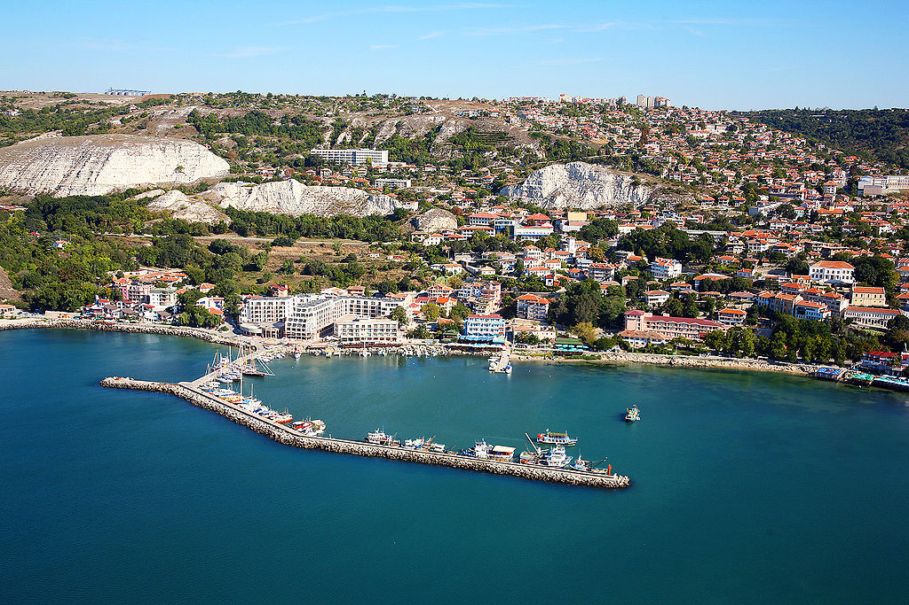

Балчик

Балчик е крайбрежен град в област Добрич, Североизточна България, разположен в средните части на северното Българско Черноморие, в близост до курортния комплекс Албена. Той е административен и стопански център на едноименната община Балчик. Населението на град Балчик към края на 2011 година е 11 321 жители.
Значима забележителност на Балчик е архитектурно-парковият комплекс „Балчишки дворец“ - състоящ се от комплекс вили изграден 1924-1934г. за лятна резиденция на румънската кралица Мария Единбургска в най-южната точка на новоокупираните земи и създадената след възвръщането на Южна Добруджа от България от академик Даки Йорданов Ботаническа градина на площ от 194 дка.
Намира се на черноморския бряг, близо са курортите Албена, Кранево, Златни пясъци и градовете Варна, Добрич и Каварна. Геоложката основа е от бял варовик. Пред повечето собственици на къщи стоят проблеми със свлачищата. Като цяло температурата на морската водата е 2–3 градуса по-ниска, отколкото по южното българско Черноморие.
Град Балчик е център за много културни мероприятия. Ежегодно се провеждат множество фестивали. С традиции е детският фестивал Усмивките на морето. С тенденция да се превърнат в ежегодни фестивали са Балфест — международен филмов фестивал за документални филми и международния Филм форум.
Градът е известен с културните празници през месец септември свързвани обикновено с имената на Иван Гранитски, Стефан Цанев и други. По същото време се провеждат и фестивалите на научната фантастика "Булгакон" и "Златен Кан".